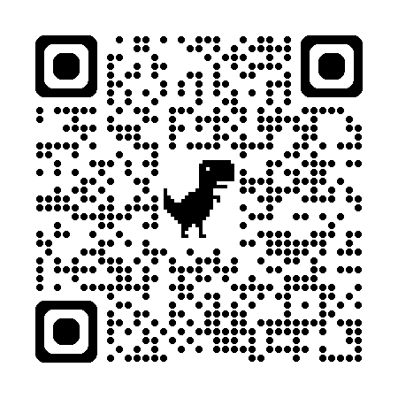

本日のセッションでライブ実演します。
Geminiのチャットは、会話がその場で流れていく形式です。音声を送って一度変換したら、その音声を何度も参照するには不向きです。一方Gemini Notebookは、音声や資料を「ソース」として保存できるため、同じ音声を記録として残し、あとから何度でも別の文書に変換できます。
学年会や担任会など、録音することを前提とした会議では、あらかじめ「児童の名前はイニシャルで呼ぶ」というルールを共有しておくと、音声データそのものに個人情報が含まれにくくなります。
こうしておけば、Gemini Notebookに保存する音声も、Geminiへその場で送る音声も、どちらも個人情報のリスクを減らした状態でAIに読み込ませることができます。最終的な文書に正式な氏名が必要な場合は、AIの出力をそのまま使わず、人の手でイニシャルを氏名に置き換えてください。
Gemini Notebookへの音声の追加方法は基礎操作ページの手順も参考にしてください。
学年会・担任会などでは、あらかじめ児童の呼び方をイニシャルにそろえておきます。
iPhone・iPadは「ボイスメモ」、Windows機は「サウンドレコーダー」、Google Pixelは「Googleレコーダー」で、学年会・担任会など、記録として残したい会議を録音します。
iPhone・iPadは共有メニューからGemini Notebookを選びます。Windows機は、サウンドレコーダーで録音した音声データがドキュメントフォルダに保存されるので、それをGemini Notebookの画面にドラッグ＆ドロップします。新しいノートブックを作成して音声をソースとして追加すれば、音声が記録としてノートブックの中に保存されます。
保護者向け・学級通信・管理職への報告など、必要な文書のプロンプトを送信します。
音声を追加し直す必要はありません。同じソースに新しいプロンプトを送るだけで、別の文書を作成できます。
入力していない情報や、イニシャル以外の個人名が含まれていないか必ず確認します。
Exercise
ここからは、実際の音声データを使って演習します。今回は、個人情報を含まない研修用の「デモ音声」を使用します。iPhoneなどで録音した音声をGeminiやGemini Notebookに読み込ませることで、文字起こし、会議録の作成、要約、重要事項の抽出、報告文への変換などができます。まずは下のボタンまたは2次元コードから、デモ音声を開いてください。

スマートフォン・タブレットから参加している方は、2次元コードから開くこともできます。
「🎧 デモ音声を開く」ボタン、または2次元コードからGoogleドライブを開きます。
Googleドライブ上の音声を、使用している端末にダウンロードしてください。共有元の音声は「閲覧者」権限のため、元データを変更することはありません。
Geminiを起動します。
「＋」やファイル追加の操作から、先ほど保存したデモ音声を添付します。
音声を添付したあと、下の演習用プロンプトを入力します。
文字起こし、会議録、要約などがどのように生成されるか確認します。
Gemini Notebookを利用する場合も、基本的な流れは同じです。デモ音声を各自の端末またはGoogleドライブに保存したあと、Gemini Notebookのソースとして追加してください。※利用しているGoogle Workspace環境やアカウントの設定によって、追加できるファイル形式や操作方法が異なる場合があります。
デモ音声を添付したあと、このプロンプトを送信してください。
💡 AIへの指示を変えると、出力も変わる
同じ音声でも、プロンプトを変えることでさまざまな文書に変換できます。
「AIに何を作らせるか」を具体的に指示することがポイントです。
🔐 実際の学校現場で使うときは
今回使用する音声は、研修用に作成したデモ音声です。実際の児童生徒・保護者・教職員との面談や会議の音声をAIに読み込ませる場合は、次を必ず確認してください。
「録音できること」と「AIにアップロードしてよいこと」は別です。
所属する学校・自治体のルールに従って活用してください。詳しくはSTEP6「音声録音・AI活用の前に確認しておきたいこと」もご確認ください。
以下のプロンプトは、Gemini Notebookに保存した音声ソースに対して送信します。目的が変わるたびに、同じソースへ新しいプロンプトを送るだけで文書を作り直せます。
担任と生徒の面談音声を、面談記録と保護者向けメッセージの2段階で整理します。個人情報の扱いに特に注意してください。
面談内容には健康・家庭状況など特に配慮が必要な情報が含まれます。使用前に必ずSTEP6「音声録音・AI活用の前に確認しておきたいこと」を確認し、出力は必ず担任が最終確認したうえで使用してください。
学級通信に掲載する記事として仕上げます。
結論から整理した報告文にします。
担任Aが行った生徒Sさんとの面談をイニシャルトークで録音し、Gemini Notebookにソースとして追加。プロンプト1で面談記録と保護者への報告メッセージの案を作成し、内容を確認したうえで保護者へ伝えました。同じように学年会の音声を追加しておけば、学級通信を作る際にはプロンプト2、管理職への報告が必要なときはプロンプト3を送信するだけで、それぞれの文書をあとから作成できます。
対応形式やファイルサイズの確認、Googleドライブ経由での追加などをお試しください。詳しくはトラブル対処ページをご確認ください。
プロンプトの「◯字以内」「◯字程度」の数字を変更して、再度送信してください。